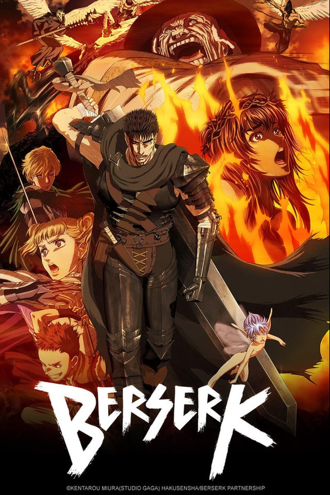

<img> slot
berserk
Novo capítulo de Berserk é lançado e fãs celebram retorno da saga do Eclipse
Studio Gaga confirma continuação do mangá com arco inédito protagonizado por Guts e Griffith
Há 5 minutos
—
Em berserk